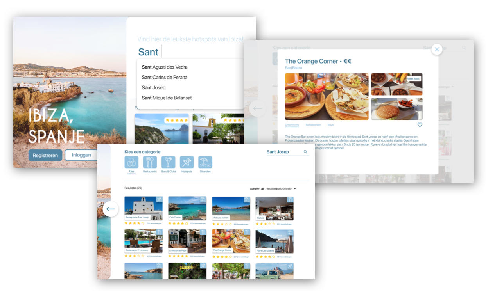

Ibiza Goings - Interactieve reisgids
Het project begon met een uitgebreide Content research waar verschillende API’s zijn onderzocht. Er is gekeken naar bruikbare data en ondervonden hoe je deze data kunt gebruiken. De volgende stap is inzicht krijgen in de doelgroep. Hierbij is de methode van Customer Journey Mapping gebruikt. Hierin staat informatie over de gebruiker voor, tijdens en na de reis, het gebruik van devices en ook verschillende informatie die de gebruiker op ieder moment zoekt. Op basis van de voorgaande inzichten is er een User Scenario gemaakt. En vanuit daar ben ik doorgegaan naar het concept met oog op de belangrijkste ontwerpkeuzes voor de verschillende fases op reis.
Met ‘Ibiza Goings’ kun je bezienswaardigheden, restaurants, stranden en andere activiteiten vinden en opslaan op één dezelfde plek. Zo hoef je niet alle informatie die je hebt opgezocht via het internet terug te zoeken in verschillende apps, maar kun je alles tegelijk terugvinden. Vakantiegangers kunnen in principe altijd overal terecht om een hapje te eten, maar voor sommigen lijkt het een eindeloze keuze en je wilt er natuurlijk zeker van zijn dat het van de beste kwaliteit is met de leukste sfeer van Ibiza. De app zoekt bij jou in de buurt, maar je kunt ook zelf een locatie aangeven om in de buurt te zoeken.
